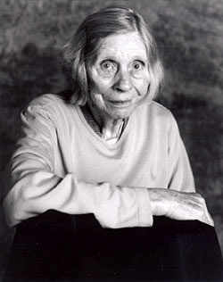
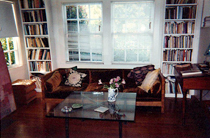

BARBARA GUEST
1920 - 2006
 |
 |
She said “It was that wonderful unfamiliarity that changes everything.” She was speaking of her early encounter with T.S. Eliot’s poetry, as a young poet who had not yet been introduced to modernism.
+
Some sixty-five years later, in her early 80s, she said of her on-going writing process: “And the leaving out has helped me. Now I believe it’s always more powerful when something’s left out.”
.
She continued: “I think I’ve been very fortunate in that I’ve had a real easeful time in construction, and I don’t have it now. I just have a lot of difficulty. And I have to regain something that I’ve deposited somewhere else…. I do think you have to get away. I think it’s the real solution. The way a painter goes into the studio to work… (there) you cease being a good mother. Automatically…. At first, I did try to write at home. I remember there was an extra room and I tried to write at home. But the work was just awful…. I didn’t want anything around me, and I still don’t. I didn’t want anything that brought congestion…. I have that room now. It’s small, but I’ve written a lot of books in it. I like it small.
.
…and then she said: “Each poem is composed completely differently. It’s what I call ‘shuffling mind.’ I go a good deal by sound, and I mean I can write on sounds. I guess you can say I write by ear. That’s really what I do.”
 — (from a conversation, Jacket, 25)
— (from a conversation, Jacket, 25)
+
She wrote: Berg changes to Shostakovitch. The Cyrillic alphabet just out, crosses in front of, enters the space the bus vacated. The poem laughs back and forth and comes the caw-like repetition. Strength comes to blows with Joy. The violins fly from steppe to steppe and in the Caucasus valleys stones skim and fall. A stocky tremolo with light flashing on the flung scabbards. Numbers work for you. Desire trudging beyond the golden mean. (Seeking Air, 119. Black Sparrow, 1978)
+
…and she said: “A wrist for every watch.”
Her writing has opened an entirely unique chapter in our perception of how far poetic language can take us. Her poems are magnetic poles to the imagined life.
— Kathleen Fraser
The Barbara Guest Memory Bank has been edited by Kathleen Fraser with the help of Lauren Shufran, editor of postcard/H2, and John Sparrow, H2 webmaster. It will continue to be open to contributions until May 14--final closing date--with the most recent comments received appearing at the top. [Please send all contributions via a formatted .doc attachment, including a single memory paragraph and a favorite Barbara Guest poem text, with its book title and date of publication. Send all material to: kfraser@sfsu.edu. (Choosing to save your document by .doc will facilitate correct lineation of poem texts issuing from both Mac and PC programs.)
For other sites looking at Barbara Guest’s work and life, see:
every other day: http://www.kickingwind.com/21706.html
Jacket: http://jacketmagazine.com/bio/guest-b.html
PENNsound: http://www.writing.upenn.edu/pennsound/x/Guest.html
EPC: http://epc.buffalo.edu/authors/guest/
+
Thank you to Kate Greenstreet, from whose blog the photographs at the top of this page have been supplied. The photograph of Barbara Guest on the train was taken by Fred W. McDarrah, 1959, and the portrait photograph was taken by Judy Dater, 2004, from Jacket.
| 5.14.06 | |
| 5.13.06 | |
| 5.10.06 | |
| 5.7.06 | |
| 5.5.06 | |
| 5.1.06 | |
| 4.23.06 | |
| 4.8.06 | |
| 3.28.06 | |
3.27.06 |
|
| 3.26.06 | |
| 3.21.06 | |
3.14.06 |
|
| 3.13.06 | |
| 3.10.06 | |
| 3.5.06 | |
| 3.3.06 | |
| 3.1.06 | |
| 2.23.06 | |
| 2.19.06 |
sent by Ann Vickery
I Don't Think This is a World for Women
from Beinecke Library [MS 271, Box 15]
Thought you might like this one from box 15 (of BG’s papers at the Beinecke), which is kind of surreal, loopy, and moving all at the same time.
I Don't Think This is a World for Women
I don't think this is a world for women.
I don't know. If I have a granddaughter
she may have an exceptional life.
There will be snow on the lockets, and petals
on the slim shoes. There will be other acres.
A different foliage on the islands and music
coming from places she says resemble rooms. High
arches, perhaps, not Gothic. That was in my
time. The edges were in my time and the squint
of the elevators ascending, we knew not where.
There were gifts in my time. Gulls, sheaves, roofs
hair falling in place there by the chimney.
Falling down by the wall in the wind.
So much was held back. The uneven stones.
Brown rain with pebbles catching its breath.
Inside each breast the inscription placed
like a clock. With the memory of a clock
and its torture.
The hands were yours, never mine.
The continent repeated its little whistle and spun
around. The continent was told it was made of sugar
and ice. The continent was an idea of yours.
So was the weather and the months.
The years belonged to you because you discovered them.
You taught us to tell time.
If I have a granddaughter
may she stand outside a telephone booth,
may she have her private telephone,
may she never wish to use the telephone,
may she own the telephone company,
may she be the long distance or the receiver,
may she sleep with a telephone,
may she say goodbye on the telephone.
may she be lucky and be a telephone.
[See Ann Vickery’s earlier entry, 4.8.06]
chosen by Jeanne Heuving
The Türler Losses (excerpt)
from SELECTED POEMS (Sun & Moon, 1995)
I was surprised in meeting Barbara Guest at the airport for a reading in Seattle that she seemed to have some prior knowledge of me and was eager to meet me. Giving her my book on Marianne Moore, Omissions Are Not Accidents, I was taken aback further when before her evening reading she had already dipped into it, enough to give me her assent: it was a book to be read about Moore and about poetry. The shadows shifted later that evening when I prodded her about her biography on H.D., Her(self) Defined, and she told me about a recognition between H.D. and herself. When I asked her to sign her book Defensive Rapture, she signed it, "from Barbara with constant recognition." I thought several times about contacting her again, although I never did, things taking shape and things disappearing.
from THE TüRLER LOSSES
Türler patterns
 distinct as
distinct as
 Palmyra ruins
Palmyra ruins
 _________
_________
Wrist watches surround themselves with danger.
Signs. Worn clasps. Their time flies, stops.
Gallops. On a street. Dropped like an egg from a tree.
Expensive signals flashed in moonlight. Semi serious
stones wearing themselves on wrists reaching
for decanters.
 __________
__________
Loss gropes toward its vase. Etching the way.
Driving horses around the Etruscan rim.
 __________
__________
Seemingly realistic codes have pointed to other
levels of images beyond their limits, ice
permitting time to decorate a block.
chosen by Andrew Joron
Hotel Comfort
from unpublished final poems
The Shadow of Surrealism
In the last few years of her life, Barbara began to identify herself, both at public readings and in private conversation, as a surrealist. At the “Audacious Imagination” tribute to her life and work held at UC Berkeley in 2003, Barbara announced that she was “now writing surrealist poems,” adding “Though I came to surrealism late, it’s better late than never.” She then proceeded to give a reading of one of her greatest last poems, “Nostalgia of the Infinite” (a reference to De Chirico’s painting of the same title).
Barbara subsequently shortened this title to one word: “Nostalgia.” Indeed, there was something of nostalgia in Barbara’s late engagement with surrealism. If it’s true that in old age we return to our roots, Barbara seems to have retraced her own roots here, going deeper than the aesthetics of the New York School and Abstract Expressionism to arrive at their surrealist sources. This lineage had already been made explicit, of course, in her essay “The Shadow of Surrealism.”
Barbara’s “return” to surrealism may have been facilitated and encouraged by the milieu in which she found herself in later life, namely that circle of admiring young men with surrealist tendencies whom she fondly referred to as “the boys”: Garret Caples, Jeff Clark, and Brian Lucas. Despite being middle-aged, I also counted as one of Barbara’s boys. As Barbara’s neighbor in Berkeley (living only a few blocks away), I enjoyed regular afternoon visits with her for many years. Our conversations frequently revolved around Barbara’s interest in surrealist poetry and painting, and “what was happening now” in surrealism.
However, the complexity of Barbara’s character and creative process ensured that her composition of “surrealist poems” never followed Breton’s (early) formula of “pure psychic automatism.” I was witness to the often agonizing, spiritually perilous process of revision, self-doubt, and self-rescue that the making of each new poem (even, and especially, a “surrealist” poem) entailed for Barbara. The terror of the blank page combined with an unshakeable imperative to always “make it new” meant that Barbara often needed to trick herself into writing (something, anything). The notion that she was writing surrealist poems was perhaps the last trick that Barbara played on herself.
Or was it the last? Barbara, in another turn of this complex game, finally felt it necessary to efface some of the evidence of her surrealist self-trickery. The working title of her last book, The Red Gaze, had been, in the initial drafts, Surrealism and Other Poems. This subtitle was eventually dropped. A poem at first entitled “She Honors De Chirico” was retitled, significantly enough, “Loneliness,” indicating perhaps the withdrawal of an enabling presence. Surrealism had become once more a shadow. Nonetheless, both in its process of composition and in its structure, The Red Gaze recapitulates the history of surrealism’s development into Abstract Expressionism, as its evocations move from De Chirico to Hans Hoffmann––and so recaptures the New York art scene of the fifties in which Barbara experienced her emergence as a poet.
Thus, this book, which was published and brought to her bedside as she lay dying, was really about her own birth. Yet even after the completion of The Red Gaze, Barbara continued to be haunted by her surrealist sources. Her final poem, “Hotel Comfort,” left unfinished at the time of her stroke, makes repeated and explicit reference to surrealism (as a source of comfort?) and testifies to the convulsive beauty that inhabited her to the end.
Hotel Comfort
Minutes each hour took ostrich leaps on the roof of the Hotel Comfort in Strasbourg.
These Surrealist moments cherished each roof a long time.
In the thickened weather of Surrealism the cathedral is across the street.
Wise lettuces exaggerate their claim near the window of the Hotel Comfort.
And you have sent your letter of explanation for the pleasure obtained
in the wooden jar. Speech-maker, you have sent notes of pleasure
in the glass jars. Tasting of weather and cinnamon.
chosen by Mei-mei Berssenbrugge
Shelley in the Navy-Colored Chair
from unpublished mss. (included with permission of Hadley Guest)
A Memory of Barbara Guest
Barbara Guest left me a presence of poetry that stays around me, a light outside the visible spectrum, like a fairy, and with great agency. I say she left it to “me,” because I experience it that way. Meanwhile, the courage and beauty of her poems grow and grow in my apprehension. The force is like a surprise.
A while ago, I thought of reading Holderlin, because I was suffering and I wanted to connect in my writing with a larger world of spirit. I found a book of Holderlin’s I’d forgotten, which Barbara had sent me almost twenty years ago. There was a short note about the translator, a friend of a friend, and this closing: “May the poems bring their own focus of life to you – and their strength from abysses all his own.”
I keep the book close to me, even though her wafting presence of poetry is so palpable. I didn’t expect a spirit clearing a path in addition to her work making the path. I chose SHELLEY IN THE NAVY-COLORED CHAIR, a late poem, with gratitude to Hadley Guest for giving me a copy and for so much more.
SHELLEY IN THE NAVY-COLORED CHAIR
I sit so close to him, our minds entwine
I assume his stewardship through the cold and mist.
There is no other beauty with which he is equipped.
The pain, the exclamation!
Early morning when the tide lowers
and we manipulate our choices.
To see, to feel, to engender memory
of this place where Shelley walked.
He is near.
He breathes into the alphabet I found upon my chair.
A dissertation they brought me, exclaiming why
he failed to ride the unswept sea, and like
a nautilus drowned in heavy seas, windswept
like the alphabet he enriched.
Each day a chambered nautilus near my chair.
To add more stanzas to this alphabet
is the view Shelley takes.
More haste and less worry in the words gathered around him.
A light gleaming over their shoulder,
before the ecclesiastic wonder breaks out
into praise for words he gathered,
pearls surround the armchair.
5/10/06
chosen by Elizabeth Robinson
A Reverie on the Making of a Poem, June 1998
from Civil Disobedience, an anthology of writings
from the Naropa Summer Writing Program
I met Barbara when I was a graduate student at Brown. She came for a reading and I was mostly too abashed to say anything, but had a nice conversation with her when I drove her, I think, to the train station. So I was surprised and deeply moved when, about six months later a letter–which I still possess–arrived from her telling me that my Burning Deck chapbook, My Name Happens Also has struck her as evidence that I was a real poet. I think I was too tongue-tied even to write back. When she moved to California, she gave everevidence of remembering who I was and plenty of times, more than I understood, extended her friendship to me. I am extremely grateful for her openness to my theological preoccupations, for her supportiveness of my work. On my last day in California before moving to Colorado, I went to visit Barbara. I was exhausted and dirty and constantly on the verge of tears, but she kept saying emphatically and enthusiastically that I was doing a great thing by moving, by taking on a new job and a new community. She reminded me how welcoming Naropa would be and that I was lucky Dorn was long gone from CU. I left encouraged and resolute. The last flowers I had from my California garden I left with Barbara.
The night before I heard of her death, my kids were sleeping and I was otherwise alone. I thought of Barbara with enormous warmth and so went and got all of her books and laid them out beside me on the bed, looking through them. I fell asleep with Forces of the Imagination beside me, opened to "The Beautiful Voyage."
A Reverie on the Making of a Poem, June 1998
 Arrived at the terrain of her sensibility
Arrived at the terrain of her sensibility
 –a stasis and
–a stasis and
 pull in the composition physical–
pull in the composition physical–
 remember, a contradictory tug phantom-like–
remember, a contradictory tug phantom-like–
 upon the environs of the poem–;
upon the environs of the poem–;
think of poem going through these stages
struggle
balance and non-movement
preparation
always an inert force in poem to try to bring it back and force this on the
surface of poem
 *****
*****
 darkening of the page and then withdrawal
darkening of the page and then withdrawal
of darkening: gradually the page lightens,
gradually the page lightens,
the invisible heaviness lifted itself.
lifted itself.
Perhaps–cinematic–
 this elevation.
this elevation.
With no warning (from inside the text,
mind attached to the text)
method to elevate poem from surface
 *****
*****
 and attacked by dizziness of atmosphere!
and attacked by dizziness of atmosphere!
In the attack of suspense; a masterful
 development of plot and erasure.
development of plot and erasure.
 *****
*****
The echo the words grant us on page and off!
 sound of the last few words–;
sound of the last few words–;
they will be abolished and this new movement
embracing an echo,
only discovered here the poem
 sustains marginality–
sustains marginality–
destructiveness
 *****
*****
the timing of this substitution one idea for another
for another
 Countdown!
Countdown! knuckle on the hand
knuckle on the hand
illustrates itself tames–
tames–
 the sentence covering it
the sentence covering it
 with a fist, held loftily–
with a fist, held loftily–
 muscular control . . . fastidiousness
muscular control . . . fastidiousness
 continual restiveness, also
continual restiveness, also
timing supplant strong attack
struggle necessary–but not to let go
risk
 *****
*****
 a blissful discontinuity
a blissful discontinuity
 orders this estrangement of each
orders this estrangement of each
 available word and the disinclination to advance (at
available word and the disinclination to advance (at
that point in time) or desire to
to hurry toward an abrupt
hurry toward an abrupt
 ending–
ending–
 rushing or spectacular jumps over the hurdles–
rushing or spectacular jumps over the hurdles–
as in conversation
or
do not hurry the poem
but take chances
motion, movement in poem
 *****
*****
 an advanced punctuation bursting from vases
an advanced punctuation bursting from vases
 into an arena of sound
into an arena of sound
 the aroma continues as a cloud of invisibility shelters
the aroma continues as a cloud of invisibility shelters
 ghost exiting
ghost exiting
 there from center right:
there from center right: solid objects merciless.
solid objects merciless.
mood
what else can poem perform in its arena
of possibilities
the phantom of possible ideas
 ***
***
 (maneuvering inside a volume)
(maneuvering inside a volume)
 a force majeure to shred the atmosphere
a force majeure to shred the atmosphere
 this fist its imprint almost
this fist its imprint almost
observable!
poet in charge
 *****
*****
and all the while movement coalescing
movement coalescing
with the strict idea–
Startling these maneuvers!
 of idea and erasure.
of idea and erasure.
not to lose sight of the ideas, and movement they must meet
not to tell all possible choices in poem
chosen by Brenda Hillman
from “Intimacy of tone…”
from Rocks on a Platter (Wesleyan University Press, 1999)
I chose a piece of Barbara's writing from the early-nineties. Barbara presented what was to become Section III of Rocks on a Platter at a reading with Mei-mei Berssenbrugge in 1994 in San Francisco. I asked if I could have a copy because I was about to teach a course on new poetry by women, and she handed me the print-out, with a few markings. It was entitled ''Others.'' To introduce her work to the class I first studied the piece line by line, as a poem that stood on its own (I'm not sure at what point she decided to make it a part of the book). When it appeared in Rocks on a Platter, I was struck by how well it worked in context of the melodic stepping stones and verbal ''chimes'' of that book, which is one of her most elusive and magnetic. She seems to be in conversation with space and place, with Adorno's philosophy, with ideas of construction, with making the modernist lyric step out into the page.
I was able to visit with Barbara often when she was in Rounceville. A few months before her death, she seemed agitated when I entered and asked, ''Brenda, tell me, how do you write a poem?'' I said almost automatically, ''Well, I think I just put one word next to the other and see what happens.'' She said, ''Well, that's exactly what I do and it isn't working any more!'' I told her it had worked for her many times and that she had many readers who love her poems. This will continue to be true as her work goes into the world. Like many other people, I miss her tremendously.
March 14, 2006
 Intimacy of tone
Intimacy of tone
 and form
and form
 beyond the tangible itinerary
beyond the tangible itinerary
 mirror trap
mirror trap
 at 30 degrees
at 30 degrees
 I have the impression of a long body
I have the impression of a long body
 of loaves and fishes,
of loaves and fishes,
 of ''belles letters.''
of ''belles letters.''
*
Wisdom in travel several palaces
 latitude without margin
latitude without margin
 silver-toned blow up--;
silver-toned blow up--;
arm in a sling and hawk chin
 you are also a hawk--
you are also a hawk--
you walk in hawk shadow a guise --,
Sad rose, Rilke charm
 lodged in a castle--
lodged in a castle--
bone button sewed to a coat--;
snow footprints adieu
cold tears splashed acre is intimacy,
 and many chimed things,
and many chimed things,
 future's conduit.
future's conduit.
chosen by Patricia Dienstfrey
Transcription
from Miniatures (Wesleyan University Press, 2002)
Attuned to sounds of loss
I met Barbara Guest in the early nineties. And, like many Bay Area poets after she moved to Berkeley, I spent afternoons in her living room enjoying her conversational phantasmagorias of tale, reminiscence, history, insight, gossip and critique. In Rounceville, the facility where she lived during the last months of her life, her observations on her day-to-day existence there were added to the mix. That her part of the room had no windows and that the corridors offered no views out onto the world hardly made an impression. Barbara believed in the power of imagination and of the unconscious to transcend the limits that consciousness imposes on experience. These beliefs continued to shape her reality and responses, which were so immediate, her “yes” and “no” to ideas, expressions, forms like no other’s. During these conversations, I became attuned to sounds of loss in Barbara’s work, to tones and images that address not just her own losses but a generation’s. WOUNDED JOY was her first choice of title for the book of her writings on writing, which was published by Kelsey Street Press as FORCES OF IMAGINATION in 2003. As an editor for Kelsey Street, I read the manuscript in preparation for production, and I think the final title we all agreed to is appropriate for this collection. But her first choice struck me as an inspired title for a book on art and poetry in the twentieth century. Barbara understood the dark side of the time she lived in and of modernism. And she confronted it in her penultimate book of poems, MINIATURES, published in 2002. She said a number of times that she nearly came to the end of her energies writing it, that she didn't know if she would have anything left for more poems. But she did. And she enjoyed bringing out every poem in the next book, THE RED GAZE, which she dictated, as the poems came, to her daughter, Hadley. Published in 2005, it is the last book of poetry by Barbara that we have.
Transcription
Go sit, listen. Two feed earlobes, with wildermass. Slowly partake
of uncrippling. Part of transcription. Sleep of transcribing after long day
In honey cave, sans emotiveness.
 There is lip descendant placed on wood for viol outside
There is lip descendant placed on wood for viol outside
witherglass. Here is plentiful lambswood fife for thine, we pass
upward in front of mere clumsy, Knight of Andorra and pony.
O sleep will be shiny apres plentiful unrehearsed their sheaves, yon
their sheaves, yon
Magnetic fleece nestling while it chew
while it chew
fertile green stone. Coxcomb be schon.
 Alliance with bickering be wrestled and
Alliance with bickering be wrestled and
 fielded on gold champs.
fielded on gold champs.
chosen by Susan Gevirtz
A Brief Picture Book for Barbara Guest
.
When Barbara Guest first moved to Berkeley about twelve years ago she had a second floor studio in Albany in what had once been a Chinese orphanage and later a girl’s school. That is when our tradition of picnics began. Besides Dorothy Richardson, we both had great fascination with Los Angeles, dolmas, kasseri cheese, black cured olives, hotels, Robert Walser, Close Up, movies, H.D. of course… I would knock on the half open door of the studio. Once when I came in she pointed to the blackboard. On it were words written long ago in chalk that became a poem from that time. Quill, Solitary Apparition was published in 1996; perhaps the poem from the chalkboard is in that book. Maybe:
 WHISPER, or
WHISPER, or
perhaps a mere tale (the hair combing) placed
 on a smooth surface
on a smooth surface
 contrasts with her
contrasts with her
 griefless OWLERY
griefless OWLERY
 ‘throughout time and its dungeon’…
‘throughout time and its dungeon’…
--from the poem “Quill, Solitary Apparition,” in Quill, Solitary Apparition, p.73
We had our picnics in the big scrubby field in front of the school. By noon, as the fog burned off, it smelled of wild anise heating up. From the table we ate on we could see a bit of the bay — our “view.” When she gave up the studio the picnics moved inside. Along with food, I sometimes brought flowers to stand in for the field. After one picnic Barbara sent me some photos (below) of the house after I left and a note that said,
Susan,
I breakfasted on food of the gods this morning, having supped their nectar, thanks to you. You should have witnessed our photographing the flowers, they were magnificent this morning, and cheered me into daily living.
You’re tossing your head as you go out the door.
B.
The message is dated 29 March 2002. It is now 30 March 2006. The loss of Barbara is really too big for me to address yet, but she had anticipated this and so much else. So I rely on her for the words, again from that early picnic era:
Palm tree
as subject — moonlight arranges
and branch, within the courtyard
 a bronze capitalization
a bronze capitalization
dares to remember—
 gift of oneself to this order;
gift of oneself to this order;
 for the sake of virtuosity, its primrose
for the sake of virtuosity, its primrose
 need of defining.
need of defining.
(the last image is a picture of "me" that was in the same pile of photos)


chosen by Stephen Ratcliffe
The Red Gaze
from The Red Gaze (Wesleyan University Press, 2005)
“I Miss Our Mythical Jaunts”
I remember the time Barbara came out to my house in Bolinas...a small ‘party’ of friends at which she became of course the guest of honor. That meeting led to what became an ongoing correspondence mostly via email (many letters back and forth between November 18, 2003 and December 20, 2004), an occasional letter or postcard in the US mail. The first of the emails, written after her visit to Bolinas, reads simply “Steve, Thank you for inviting me to your piece of paradise, I was enchanted – the freshness of the earth and the beauty of the landscape and your close friends. Thank you for introducing me to Juliana. Barbara” And a week later, the draft of a poem she called “SNOW COVERS THE RED GAZE,” whose last line reads “Blue enters from the left.” Three days later she wrote “The last line of ‘Red Gaze’ is now ‘Blue enters later.’” And when I asked her what thoughts had led to that change, she wrote back “You said you wished you knew the thinking that changed ‘Blue enters from the left’ to ‘Blue enters later. ‘It’s all in the sound of the ‘Ls.’” Months later, as the war continued, she returned to that thought about that line, noting “I feel a nostalgia towards the early days of our correspondence and I'm certain this will not leave me. There was the little robin in ‘The Brown Vest’ and ‘blue enters later’ in ‘The Red Gaze.’ I remember your asking, ‘what does that mean?’ and my saying, ‘blue is always late.’ How did I ever think of that? Around the edge of that poem was always the terrible war in Iraq, and even the hotel in Iraq, the Ishtar Sheraton. Other hotels were hit by rocket fire, but the Ishtar Sheraton has escaped so far, protected we hope, by Goddess Ishtar.” Previously, after a lapse of six weeks in our correspondence, the message from BARBGUEST@aol.com ended “I miss our mythical jaunts.” As now indeed do I.
The Red Gaze
Red, purple, brown Guardian leaf.
Complications of red enter the leaf
and it is more accomplished,
turning brown then gray in varying attitudes
after the snow begins. Colorful complications
disturb serenity, causing our eye
to wander over the shaking tree.
Morning began with a concert of white.
Blue enters later.
chosen by Ann Vickery
History
from Beinecke Library [MS 271, Box 25]
Laura Riding Jackson would call the way Guest spoke to her as talking “in an at-home-with-me way” and others too remarked on the sense of ease that Guest created. Certainly that is the feeling she created when I spent a magical (despite the cliché) afternoon with her and Hadley in Berkeley—there was that sense of the kindred, the inclusion into the domestic life, as well as the lively debating of poetry, colour (even the shade of some flowers), and art.
I want to leave with a sense of that connection by including a small bit of the correspondence between Barbara and Frank O’Hara, a few letters from him and poem from her. [Further comments and a review of The Red Gaze will feature in the forthcoming issue of How2, v2. n4].
Excerpt from a letter from Frank O’Hara to Barbara Guest dated April 20, 1959:
[MS 271, Box 16]
Dear Barbara,
That was a lovely reading. I could have listened to you forever. I particularly adored each one as it came along, it didn’t seem to have ups and downs at all so far as your selection went, and your own voice, air and manner was as precisely itself as the poems were, which I believe I’ve been told adds up to originality or more.
Excerpt from a letter from Frank O’Hara to Barbara Guest dated Oct 19, 1959:
[MS 271, Box 16]
Dear Barbara,
How is the most beautiful poet of the English (and probably any other) speaking world today? I’ve been thinking of how lovely you looked, like a mirage, the other day and what an unexpected joy it was to see you, as in Ez’s famous haiku:
 The apparition of that face in such a motley crew
The apparition of that face in such a motley crew
 a petal in a brassy brasserie…
a petal in a brassy brasserie…
I am so glad I got to sit next to you and Kenneth….And I still don’t see why we couldn’t have been sitting upstairs at the bar underneath the Lippold, all jangling and quivering like a field of mushrooms at the approach of John Cage, or wading in one of the front fountains as is, often often, our wont. From the preceding sentence you can see that over the weekend I peeked into Ronald Firbank for about two seconds and have been ruined ever since. You really have to watch out for him. That is if you’re me, you do. My silliness is not so much incipient as insurrectionary! Now if I can only keep a firm hold of Piazzas in my memory I may get through all right.
Excerpt from a letter from Frank O’Hara to Barbara Guest dated Dec 4, 1959:
Dear Barbara,
I have been reading the two poems you sent me over this morning with my coffee and how beautiful and perfect they are! they have that melancholy that only perfect feeling has, they are not whistling in the dark like so many poems are now (and so many paintings), they exist purely for the sake of their experience and then they are one’s own experiences…
History
 for Frank O’Hara
for Frank O’Hara
 Old Thing
Old Thing
 We have escaped
We have escaped
 from that pale refrigerator
from that pale refrigerator
 you wrote about
you wrote about
 Here
Here
 amid the wild woodbine landscapes
amid the wild woodbine landscapes
 wearing a paper hat
wearing a paper hat
 I recollect
I recollect
 the idols
the idols
 in those frozen tubs
in those frozen tubs
 secluded by buttresses
secluded by buttresses
 when the Church of
when the Church of
 Our Lady cried Enough
Our Lady cried Enough
 and we were banished
and we were banished
 Sighing
Sighing
 strangers
strangers
 we are
we are
 the last even breath
the last even breath
 Poets
Poets
 Yet the funicular
Yet the funicular
 was tied by a rope
was tied by a rope
 It could only cry
It could only cry
 looking down
looking down
 that midnight hill
that midnight hill
 My lights are
My lights are
 bright
bright
 the walk is
the walk is
 irregular
irregular
 your initials
your initials
 are carved on the sill.
are carved on the sill.
 Mon Ami!
Mon Ami!
 the funicular
the funicular
 has a knife
has a knife
 in its side
in its side
chosen by Eléna Rivera
Tessera
from Fair Realism (Sun and Moon Press, 1995)
I had the good fortune to attend the festschrift for Barbara Guest at Brown University in 1994. I met her very briefly then, and again later at other readings and book parties. My impressions on meeting her for the first time remained with me. Barbara Guest as luminous, all friendliness and graciousness, composed, quiet. I had read Seeking Air, the H.D. book and some poems. At the festschrift I met her daughter, Hadley, and H.D.'s daughter, Perdita, and floated. I met new friends, heard the distinguished panelists, and soaked in the light and oscillations that reverberated from Barbara Guest’s presence. She made so much possible because of her integrity, that combination of rigor and playfulness—her poems no longer about the words, but stretching into shimmering mysterious presences.
“Tessera” is a bittersweet poem, full of “sadness and felicity.” I was initially drawn to it by the lines in the second part having to do with “Inertia.” I’ve struggled so much with inertia in the writing process that I immediately seized on this connection, the inertia not just of resistance but of the fear that one will “lack the skill” (another of “inertia’s” Latin meanings), that one will be distracted by sleep and other things, “explanations” for example. On one side Philomène, the nightingale, bringing its song and heat, on the other Inertia, so lovely sounding, pulling the poet away from all those “Hot turns.” Once one arrives in “the land of sunbeams and/silk oaks” it seems “easy,” but first one has to gently call away inertia and let oneself be drawn into the mosaic of ghosts and thistles (the mysterious stripped clad “sadness and felicity”) that suggest the hidden. “The poem is the unburdening of ghosts of the past who have come to haunt the writer exposed to the labyrinth. These are ghosts not of words; they are the ephemera that surround and decorate the mind of the poet, a halo rescued from life.” (from “Mysteriously Defining the Mysterious,” Forces of the Imagination, p. 85).
TESSERA
 1.
1.
Sadness and felicity
you’re coming back
ghosts in your striped Greek dress.
Tears go into the urn
Philomène brings up the brazier
things heat up
water, wine, thistles in the jug.
 2.
2.
Hot turns.
More.
I said to her, “Go away Inertia,
beautiful, fragrant, violet as you are
go away.”
She kept talking about letters, diaries,
quotations, explanations,
words linking me to sleep.
I said, “Go away Inertia,
even if you bear a Latin name.”
 3.
3.
Then it was dark on the quarries.
I had to hire a truck to load up.
My boxes. My images. My material medica.
The driver arrived.
The truck was loaded.
I’m here in the land of sunbeams and
silk oak.
Very easy. But heavy
on the initials.
 4.
4.
Ghosts in stripes.
Thistles.
“I wish I were quieter,” she said
at Thebes.
What echoes from legends,
Or armadillos or bees.
chosen by Ann Lauterbach
The Surface as Object
From Defensive Rapture (Sun & Moon Classics, 1993)
A Shape that Floats
Barbara Guest: a certain pace, or measure, or stance, in her voice and in her gait. There was a stoic grace to her posture; the demeanor of someone who had learned to protect something important---defensive rapture, maybe. I am not sure when we first met; it may have been when I invited her to read at PS1 in the late 1970s or early 1980s. That was the first time I heard her read, from, I think, The Countess from Minneapolis. She gave me some personal objects when she left for California. Among them, a gray coat she had bought in Paris; she said it was "good." It doesn't fit me, but I love to have it in my closet; it reminds me of her; it has a shape that floats. She had kindness and severity, the latter I associated with her ambition for poetry; her own, of course, but mostly for the ongoing fact of it. She made me feel less lonely as a poet. She told me she thought mystery was the most important poetic value.
The Surface as Object
 the visible
the visible
as in the past
 subsisting in layered zone
subsisting in layered zone
 refuses to dangle
refuses to dangle
 oaths on marsh field
oaths on marsh field
 whitened or planned
whitened or planned
 memorial distance
memorial distance
 rather than vine
rather than vine
 that which proliferates
that which proliferates
 the bittersweet grapple
the bittersweet grapple
 initiates
initiates
 a mysterious mesh
a mysterious mesh
 forbids the instant discloser
forbids the instant discloser
 delays a humid course
delays a humid course
 or creates a patina
or creates a patina
 jungleware.
jungleware.
 or she moving forward into
or she moving forward into
 the line of sticks
the line of sticks
 circled by sticks
circled by sticks
 her hand flies up
her hand flies up
 in the direct line of sticks
in the direct line of sticks
 odor of lines.
odor of lines.
 knowing the difficulty
knowing the difficulty
 annexation of Egypt
annexation of Egypt
 oaths on marsh fields etc.
oaths on marsh fields etc.
 a possible intimacy with
a possible intimacy with
 the tomblike fragrance of stone
the tomblike fragrance of stone
 the cult-like
the cult-like
 expressiveness.
expressiveness.
 (the perpendicular
(the perpendicular
millimeter stone
 less raw
less raw
 or, gangling
or, gangling
as the artful
lessening surprised.)
 tree grown guava
tree grown guava
 oaths on marsh field
oaths on marsh field
the hungry minstrel and the forager
gold on the guava lick of rosin
and the chill latched thicket
grunt marsh weed
regardez-la
the untamed ibis.
[go to postcard for Ann Lauterbach’s Tribute to Barbara Guest, written for The Poetry Project Newsletter, in part as a poet’s record of Barbara’s life.]
chosen by Marjorie Welish
Rocks on a Platter, IV [excerpt]
from Rocks on a Platter (Wesleyan University Press, 2004)
Something that Cannot be Reconstructed
To appreciate Guest's late lyric is to encounter her radical spacing and through the radical spacing, her poetic logic. The page-by-page constellations found in Rocks on a Platter [the force of which spatiality is mostly lost in translation here] demonstrate that if Mallarme is presupposed, a decidedly extreme textual sampling recreates his poetics. Her spacing is primarily of literature and of literariness, as is indicated in the remarkably located "thee GLOSS GLOSS" --this being text, intertext and metatext all at once. And well met are these words in proximate space which does away with the possibility of resemblance and of reference, for each of these words are indexical of something that cannot be reconstructed. The constellations in Rocks on a Platter are not verbal ruins, nostalgic for a past; excavated extremity, they are constituted of themselves. This is a poem made of spacing, of paratactic sense at the expense of meaning, or of meaning contented indeterminate and indifferent to illustrating sense.
Rocks on a Platter
IV [excerpt]
The Moment a limit is posited
It is overstepped, and that
Against which the limit was
Established is absorbed
ADORNO, Aesthetic Theory
_______
Without shyness or formality
 “a gesture if allowing oneself time”
“a gesture if allowing oneself time”
Remember how starry it arrives the hope of another idiom, beheld
 That blush of inexactitude, and the furor, it
That blush of inexactitude, and the furor, it
 Will return to you, flotsam blocked out.
Will return to you, flotsam blocked out.
________
 compose, like Schoenberg, poem music
compose, like Schoenberg, poem music
 “robustly”
“robustly”
 “flotsam of the world of appearances”
“flotsam of the world of appearances”
 drifting by and out of the picture.
drifting by and out of the picture.
 Where the throne disappears.
Where the throne disappears.
________
 now in robust position,
now in robust position,
NAMING
 naming the throne “flotsam of appearances”
naming the throne “flotsam of appearances”
ALLOWING TIME.
________
 Is evanescence the wool beggar?
Is evanescence the wool beggar?
strike that simpleton
 “Bafflement?”
“Bafflement?”
 Thee
Thee GLOSS
GLOSS GLOSS
GLOSS
 point to the Mix, and
point to the Mix, and
 there! It slides into view
there! It slides into view
 the Dolphin.
the Dolphin.
 before the moment oversteps,
before the moment oversteps,
 into
into
 the hum pour his ivory.
the hum pour his ivory.
________
chosen by Rosmarie Waldrop
River Road Studio
from The Countess From Minneapolis (Burning Deck, 1991)
 I don't remember when I met Barbara. But I discovered her work with the book Moscow Mansions and fell immediately under her spell. I soon after wrote a sequence that uses phrases from her “Byron’s Signatories.” (“Kind Regards,” a chapbook in 1975 and reprinted in Streets Enough to Welcome Snow.) And have gone back to her poems again and again.
I don't remember when I met Barbara. But I discovered her work with the book Moscow Mansions and fell immediately under her spell. I soon after wrote a sequence that uses phrases from her “Byron’s Signatories.” (“Kind Regards,” a chapbook in 1975 and reprinted in Streets Enough to Welcome Snow.) And have gone back to her poems again and again.
 I’ve always admired her combination of lightness and passion, her sudden veerings in unsuspected directions. In talking with her too, the sudden whimsy that in no way diminished her passionate commitment to poetry and art. But in the poems, the infallible rhythm, the purity of her line... It is a great sadness that we won’t get any more of it.
I’ve always admired her combination of lightness and passion, her sudden veerings in unsuspected directions. In talking with her too, the sudden whimsy that in no way diminished her passionate commitment to poetry and art. But in the poems, the infallible rhythm, the purity of her line... It is a great sadness that we won’t get any more of it.
RIVER ROAD STUDIO
Separations begin with placement
that black organizes the ochre
 both earth colors,
both earth colors,
Quietly the blanket assumes its shapes
as the grey day loops along leaving
an edge (turned like leaves into something else),
Absolutes simmer as primary colors
and everyone gropes toward black
where it is believed the strength lingers.
I make a sketch from your window
the rain so prominent
earlier now hesitates and retreats,
We find bicycles natural
under this sky composed of notes,
Then ribbons, they make noises
rushing up and down the depots
at the blur exchanging
its web for a highway.
Quartets the quartets
are really bricks and we are
careful to replace them
until they are truly quartets.
[go to postcard for Rosmarie Waldrop’s Tribute to Barbara Guest]
from Cynthia Hogue
Remembering Barbara Guest
I had only met Barbara once before the interview included in Innovative Women Poets: Works and Interviews, U of IA P, 2006 (out next fall), as it happens, her last interview, set up by Kathleen Fraser and proposed by the editors as a conversation between them. The day of the appointed conversation in Berkeley was one of those crisp fall days, and as soon as we gathered to talk, it felt good to be there. While asking Barbara about whether surrealism had influenced her, I read her a passage from Forces of Imagination, to which she responded, "Did I write that?" Beth Frost stepped in at that point to help, and said, "I guess we're asking you about how you write poems!" Barbara laughed wryly. Her answer: "I guess you are asking me that!" In all, the four of us spoke for four intensive hours, and then relaxed together over a leisurely lunch at Barbara's favorite restaurant. It was a halcyon day for reasons that were subtle and unspoken; we savored the moment's fellowship. In those few short hours, I felt that I understood something essential about Barbara, who was both meticulous and regal in her keen intelligence, undimmed in her work up to all but the very end.
Among my favorite passages is this one from "The Turler Losses," a stanza that I thought was the end, but was a moment too intensively sentimental to end a Guest poem:
"my image against your shoulder, the homespun
logic of our twosomeness, a fabric time
will displace, the threads, a shrivel here,
there a stain, the rotting commences like lanes
of traffic hurtling into air as the sun comes down."
 (SP 110)
(SP 110)
I still love it. And mourn the sun having come down on her twosomenesses and the fabric of life that time has displac
chosen by Catherine Wagner
Bird of Art
from Miniatures (Wesleyan, 2003)
I knew Barbara Guest only a little—I met her in 1996 when I interviewed her at the little house where she lived in Berkeley. She was very kind to me, though at first a little regal; we understood one another much better after the interview was over and the pressure was off. Looking at a picture I took of her that day I notice her well-cut blond hair—it must have been dyed, as she was in her mid-70s, but it looked great. Her eyebrows just slightly darker. Stylish, stylish, in person and in poetry. Guest’s work then and now seems to me to be a gorgeous mystery, gems constellated in a black sky. Not mysterious because meaning is not available in her writing—it is available—but because the relationships between wordgroups are so tensely and intuitively constructed; lines are balanced like the objects hanging from a mobile. I value her faith in poetic mystery and her belief that poetic form does and should evolve. I don’t understand what happens in my mind as I move from one line to the next: I’m just electrified, quietly and beyond reason.
Bird of Art
 THERE CAME A CLOUD IT SETTLED ON YOUR
THERE CAME A CLOUD IT SETTLED ON YOUR
SHOULDER.
 The cloud seeks high culture, after Ovid.
The cloud seeks high culture, after Ovid.
 To soar through domes, bird of Art,
To soar through domes, bird of Art,
 Halfway to icy heaven.
Halfway to icy heaven.
 Halfway to heaven search in high space, in deep
Halfway to heaven search in high space, in deep
 crevasse.
crevasse.
 Knighthood.
Knighthood.
 Poesie be engendered after OVID.
Poesie be engendered after OVID.
chosen by Rena Rosenwasser
“Confucius”
from The Confetti Trees (Sun & Moon, 1999)
Memories rich in the lore of Lubitsch, Lang and Stravinsky
Barbara was invited to read at the Santa Fe Institute of Indian Art. During the airplane ride she kept gazing at a monitor where you could track the position of the plane at every point. She took childish delight in gazing at the flight pattern. One would have thought she was maneuvering the plane. Later when we began to drive to our destination, pinion, arroyos, and numerous mesas surrounded us. I found myself snared by these sites and smells. Barbara, on the other hand, felt disconsolate. New Mexico upset her. She was uneasy and agitated by vast desert space; definitely a creature more disposed to oceans, the theme that played a part in the California of her adolescence. She was also inclined to palms, plane trees & memories rich in the lore of Lubitsch, Lang and Stravinsky. These were the émigrés that had inhabited the Los Angeles she came to reside in as a child. They represented a compelling world of the imagination and Barbara embroidered their narratives into her own.
"Confucius"
The actress was washing her face the camera picking up her motions slowly with great emphasis on the wrists, she had a way of flexing them that was unique and the director wanted the camera to catch this movement. The cameraman was from Sweden and he understood the delicacy of piecing together snow floes. He understood the scenario, how snow rinses her wrists slowly, without being told he slowed his camera, so that the audience might grasp the meaning of snow on the wrists of the actress, and the snow that the wrists moved through. He was filming "slow whiteness." Lightning was important and the lighting assistant, Swedish also was selected because he understood the business of snow as it enters the atmosphere. The dialogue that takes place between it and day as it begins and as it ends gathering a momentum of whiteness. The film becomes more than a contemplative movement of wrists. In the beginning water that fell from her face to her wrist served as an introduction. At that point the story line needed to be photographed from far above. Only later in close-up details were sharpened to pick up the signature of a woman's face. There seemed to be no misunderstanding as to who indeed was the star and what role the camera played, each subsisting on snow. Within the screenplay originally fixed solely on the ability of the actress to flex her wrists (camera shot of wrists) (camera preys on face above her wrists) a secondary plot was now beginning to develop as snow and light crossed the face of the actress. The actual fact of her washing, the Director now realizes, has become a subsidiary plot in need of more complex artistry.
The Director is a difficult man. His sudden changes of mood often cause alarm. In exasperation he picks up a book lying on a table nearby and throws this book hitting the sink where the actress washes, narrowly missing her wrists. It is silent film so we do not hear a plaintive voice, or the sound of the book striking.
We see the trembling of the actress as the book narrowly misses her wrists. Without any prompting she picks up (no sound to delude us) and guides the book up to her face where we see written on its cover The Sayings of Confucius. “She is reading Confucius!" we repeat over and over, as we savor the Director's silent applause.
[For a description of the collaborative process involved in designing the book MUSICALITY, go to Rosenwasser's postcard]
a note from Etel Adnan
Adio, Barbara
Heard that Barbara Guest died. Felt a shock, although knew she was in her last days.
Death is so definitive, irreversible. It made her image immediately vivid. It’s there, in the middle of my space. I’m not sorry in the usual sense, I’m thinking. Her poetry already starts to take another significance. I can’t tell which one. It breathes differently. She will not add to it. She won’t interfere in anything. She was high-strung, almost haggard. Burning the air around her with tension—I think of 16th century Spanish nuns, Catalans, maybe. Very clear pale blue eyes, on the alert. Passion for poetry, for excellence about all. For the gift of Language. The English language. In fact, an ancient person. Perhaps a reincarnation, if that proves to be true. An alerted thin animal. A silent friend. (2.18.2005)
3.14.06
chosen by Frances Presley
The Strum
from If so, tell me (Reality Street, 1999)
Inventions and Constructions
I didn’t know Barbara Guest’s work as well as I should, but I always admired what I did read of hers. She was also one of the people who brought me closer to HD, and I remember her speaking with enthusiasm at the Royal Festival Hall in London, though I forget the year (early 90s?). I know that Perdita was also there, and it was very exciting for me to be able to share my appreciation of HD with them. They seemed to complement each other, and make sense of HD the woman, as well as HD the writer. The poetry collection of Guest’s that I’m most familiar with is the book published in the UK by Reality Street in 1999, If so, tell me. I read and made notes on it while I was in Edinburgh, attending the Edinburgh festival, and visiting some of the local sites, especially those associated with Mary Queen of Scots. A poem I wrote then, ‘the diamond speaks’, about Mary’s dangerous political subterfuge, is clearly influenced by Guest, both in its allusiveness and use of visual design, as well as the pleasure of exploring Mary’s (Barbara’s) inventions and constructions. I feel as though I was with Barbara Guest then and am again now, in writing this. (London, March 2006)
The Strum
What is fraught and undenied travel in rare
dayishness supplication in ermine an approach
 Landscape treated
Landscape treated
to remoteness.
Newish place, ferns, gracefulness.
And excavation on
the edge of attendance.
 Weed dangle in hair.
Weed dangle in hair.
Do not reverse shapes
go scared
 ermineless.
ermineless.
 Ripe in default
Ripe in default
 what preceded
what preceded
 old root tree.
old root tree.
 (details starts to blur)
(details starts to blur)
 Nightingale
Nightingale
 and human outline
and human outline
 landscape behind landscape.
landscape behind landscape.
 Spill of ink not enough
Spill of ink not enough
 lather
lather
 bottomless
bottomless
 passage in the red strum
passage in the red strum
 Dream of effervescence
Dream of effervescence
 pine and mountain gear.
pine and mountain gear.
 a different appearance, new
a different appearance, new
 imaginations
imaginations
 here and beyond.
here and beyond.
3.13.06
chosen by June Felter (painter, BG book collaboration)
Musicality
from Musicality (Kelsey St. Press, 1988)
Great Care was Given
Of course "Musicality" is my favorite poem of all time! [And I felt that way even before the pages of Barbara's poem and selections from my water color sketchbook were brought together as a book.] I didn't see the poem or any plans for the book ahead of time. Robert Rosenwasser and I visited the special printer, Peter Rutledge Koch, and great care was given to getting the right set up for this book, "Musicality". I heard later that it won an award for best small book of the year. The amazing thing to me was that every one involved just did their thing without checking with each other.
Barbara and I had met at a reading that she did at The New School, in San Francisco—in1986, I think. She was very impressive, and luckily we "clicked". Because of her interest in painting, we had a real connection. She'd done reviews for Art News and Art in America. It was a treat later to read her wonderful "Durer in the Window Reflections on Art". When she suggested our collaborating on a book, it was in New York City, at her place on 16th St. She served a scotch and soda and we celebrated the occasion. I felt that I had suddenly become sophisticated! It was a happy time. Barbara was so easy to work with. She loved doing books with artists and I think this was partly because she really was an artist herself. Her collages, made in New York, were great to see on the covers of several of her books.
MUSICALITY
The wave of building murmur
 fetid
fetid slough from outside
slough from outside
a brown mouse a tree mouse.
a tree mouse.
 two trees leaning forward
two trees leaning forward
the thick new-made emptiness
 Naturalism.
Naturalism.
 Hanging apples
Hanging apples half notes
half notes
in the rhythmic ceiling
ceiling red flagged
red flagged
rag clefs
 notational margins
notational margins
 the unfinished
the unfinished
 cloudburst
cloudburst
a barrel cloud fallen from the cyclone truck
they hid under a table the cloud
 with menacing disc
with menacing disc
 Leaves ripple in the dry cyclonic
Leaves ripple in the dry cyclonic
 levelled crusts—
levelled crusts—
 for four hands
for four hands of chambered
of chambered
breeze & cloud design
design
her imposing composition of cloud weight
upon the sketched-in roof small jumps over
small jumps over
the roofs
 a sonatina
a sonatina
edges in like sand grains under the orchard trees
 pitching marbled stripes
pitching marbled stripes
of dusk like casino awnings near a vast pool
or contrasting mountain elevation
light retires in gradations
 flick and flutter
flick and flutter
 "a favorite view"
"a favorite view"
Gieseking's troll marks
follow gauze undeterred by erroneous
dew the piano reminds us
the wayside is littered altering
"try" into fog cast
the suite of "remembering"
in forest guise the "theme"
shy of Niebelung thunder requests the artist
who is shy driving her motor
watching big mountain thunder fall on shy trees
 the composition is shy
the composition is shy
the example of cyclonic creativity equally devastates.
to sketch "A Favorite View" ethnically positions
 two strangers who join hands in a movie
two strangers who join hands in a movie
 without sound
without sound
one leaps on the other's lap
 a cloud
a cloud
or Purcell muslin intimidating in
anxious-less moments when thoughts provoke
drained hands
 lightning held to a border of trees
lightning held to a border of trees
 patient exercise of drawing a visible number
patient exercise of drawing a visible number
chromatically the structure unfolds
 a formal delicacy
a formal delicacy
when she hitches up her notebook and sits under
the Steinway the blue trees vanish.
 "the Willies"
"the Willies"
 cobbles breeze
cobbles breeze
a pearl snatched from its shell
 in that moment
in that moment
as the sky slowly
 Musicalities
Musicalities
 orchards in most of their
orchards in most of their
depth the stubbed mountain
 a chain of miniature birds
a chain of miniature birds
you understand the euphemisms of nature
how the figure appears in still life
and you understand the creation of orchards
your hesitation is not forgetfulness
something else hides the view
 Evanescence
Evanescence
the bather in the pool
(Note: This version of Musicality has been correctly reproduced in its linearity, but the original open and airy page space of the book's pages, with its water color drawings by June Felter, has not been accommodated here.)
3.10.06
chosen by Bill Berkson
On the Way to Dumbarton Oaks
from The Location of Things (Tibor de Nagy, 1961)
On the Way to Dumbarton Oaks
The air! The colonial air! The walls, the brick,
this November thunder! The clouds Atlanticking,
Canadadianning, Alaska snowclouds,
tunnel and sleigh, urban and mountain routes!
 Chinese tree
Chinese tree
your black branches and your three yellow leaves
with you I traffick. My three
yellow notes, my three yellow stanzas,
my three precisenesses
of head and body and tail joined
carrying my scroll, my tree drawing
 This winter day I'm
This winter day I'm
a compleat travel agency with my Australian
aborigine sights, my moccasin feet padding
into museums where I'll betray all my vast
journeying sensibility in a tear dropped before
"The Treasure of Petersburg"
 and gorgeous this forever
and gorgeous this forever
I've a raft of you left over
like so many gold flowers and so many white
and the stems! the stems I have left!
3.5.06
chosen by Rachel Blau DuPlessis:
Composition
from The Red Gaze (Wesleyan University Press, 2005)
Composition
Lo, from the outside a poem is with us, of another composition.
Travelled from an antique place.
Writing, narrow and sparse, pungent as the lemon tree.
Difficult, spelling and montage.
We have built no large hall to labor in.
We sleep on small cushions for as long as we wish.
 Our lives are composed with magic and euphony.
Our lives are composed with magic and euphony.
chosen by Paul Hoover:
Noisetone
from Miniatures (Wesleyan University Press, 2002)
The Light of Surface
In 1994, Maxine Chernoff and I moved from Chicago to Mill Valley, California. Barbara and Hadley moved to Berkeley around the same time, and Peter Gizzi and Elizabeth Willis landed in Santa Cruz. As new arrivals, we made a fragile bond with both. From the viewpoint of San Francisco, we all hailed from “the East.” It brought to mind the Saul Steinberg drawing in which Manhattan takes up three-fourths of the country, and a thin strip in the distance includes all the rest.
Barbara very graciously invited Maxine and me to lunch at the house she rented on Milvia Street. On the outside, it was a modest two-story stucco draped with vines. But the inside had been redesigned so that the second floor consisted of a modernist catwalk of blue metal that had space for a bed and Barbara’s writing desk. A New York loft had been stuffed into a cottage. It seemed the perfect collision of hominess—old wood, books, a dusty stereo—and the postmodern. In some ways, the house paralleled Barbara’s work, which has both warmth and the cool edge of steel and innovation. The other guests were Rena Rosenwasser, publisher of Kelsey Street Press, and Andrew Joron. When Andrew said that his favorite magazine was Sulfur, Barbara quickly insisted on the value of our magazine, New American Writing. On another occasion, when a leading San Francisco figure complained about being served fruit Jello in Minneapolis, Barbara defended the Midwest culinary arts, in case we might be offended. Later she came to our housewarming, a major trip that involved crossing one of San Francisco’s bridges, a Bay Area sign of social commitment. On that occasion, Maxine’s widowed Uncle Kurt, a charming man with continental manners, chatted her up. We were amused because Kurt had recently dated all seventy-seven women who’d responded to his newspaper ad for companionship.
I chose “Noisetone” because it shows Barbara’s painterly sensitivity to the “light of fiction and the light of surface,” to quote her poem “Wild Gardens Overlooked by Night Lights.” Ashbery interrupts his investigations with humor. Barbara’s poetry seeks not to surprise but to take up lodging within the moment, reflecting the light of one perspective toward the darkness of another. Green is the sound of the moment; the future is written in its white spaces.
Noisetone
 Each artist embarks on a personal search.
Each artist embarks on a personal search.
 An artist may take introspective refreshment from green.
An artist may take introspective refreshment from green.
Or so they say in Barcelona when air is dry.
 In our country it is a water sprinkler than hints, “rinsed green.”
In our country it is a water sprinkler than hints, “rinsed green.”
 Colors often break themselves into separate hues
Colors often break themselves into separate hues
 of noisetone.
of noisetone. In a Barcelona cabaret when green is overtaken,
In a Barcelona cabaret when green is overtaken,
it is stirred into the mint color of drink.
 The spirit is lifted among primary colors. Nine rows of color.
The spirit is lifted among primary colors. Nine rows of color.
 The future writ in white spaces.
The future writ in white spaces.
3.3.06
chosen by Kelly Holt:
The Glass Mountain
from Defensive Rapture (Sun & Moon, 1993)
Art, Reality, Imagination and the on-going Dialogues
Barbara Guest was the single most important influence on my growth as a poet during my college years; she authorized me with her poetic possibility and its dialogue with artifice. I had written "off" my undergraduate work as that kind of precious juvenilia only one's twenty-one-year-old self could write, but remembering her has allowed me to reclaim this juvenilia with a sense of urgency. When I heard of her death I pulled out what I wrote on her work for my undergraduate thesis and, now as I'm writing my dissertation on the Berkeley Renaissance community, realize that Guest's poetry and poetics essays lured me to strive for a prose that might eloquently discuss her arrangements of art, reality, imagination, and the on-going dialogues between them. I chose “The Glass Mountain,” written in memory of James Schuyler, because it functions as a conversation between the poets’ works and focuses particularly on the interacting forces of personal observation, idealized interpretations of reality, and the composition of poetry as a seizing, artistic force. The poem evokes the syntax of memory at work in Schuyler’s poetry, which I found fitting for the memory bank.
The Glass Mountain
 in memory of J.S.
in memory of J.S.
 I
I
 king as wanderer
king as wanderer
 replied
replied we do and always
we do and always
the least recounting
pelting dew
bird in the sunrise room;
once or twice the landscape burns
what we are after tires
clouds mohair.
rhododendron bring
 pods to the mountain;
pods to the mountain;
a tremulous position
harp on a mountain of glass.
 II
II
 is it a power
is it a power
you pass in the night
taking water from the tap,
fog or phantom
the king stares at.
 you are not the snake lady
you are not the snake lady
gold filament above
the snake limbs
nor does she tell
who taught the dance.
 III
III
 the king watched
the king watched
in flat country the
caravan at ewe season
a density
sand and thyme
 near the threshold
near the threshold
where they milk
have bitten the nut-
like substance
 IV
IV
bauble of sound
mahogany the king
traveling the length
overhead a climate
of twang the rushed snow
unstoppable space in the bold
different in the next imagined
movement the breach
is inimitable
a phrase others believe
there is no escape
the towed rock dims.
 V
V
why not live
 image strewn
image strewn
and goes pitter pat
next to the resolute corridor
and a diadem would hang on the fringe
actual pieces of tame fibre shut off.
on the steeple with the watercan
and thunder in the earring she
caught the speech of the termagant
the roll
was seen the plummage and owl
a raft on the cold river; skin
on the raft a king
picked up boards and sunk them.
 VI
VI
the shades lavished
in the ideal
climate of planets fear
steam rolling up;
holding hands in a ring
wet to their waists
 hair
hair
a slippery blossom.
exposure beneath the May apse
 doggerel;
doggerel;
chunks of filched
 objects not
objects not
lapidary; a king.
 VII
VII
attent on detail
 the hullabaloo over
the hullabaloo over
rule half water half worn
 running the notion of land;
running the notion of land;
tells us where light comes from
 white curtains in its beak;
white curtains in its beak;
closer closer to the splintered mountain
O king endlessly
scattering.
3.1.06
chosen by Maxine Chernoff:
Leica
found at the EPC (http://wings.buffalo.edu/epc/authors/guest/leica.html)
Leica
Others about the embarking
have reasons.
I holding shreds
carpenter leavings.
Motions in the wind,
wave rolling
disturb sad plots,
disturbing sad plots.
Desolate places
on the grass
where birds are a light,
Gather in midsummer,
wood shingles,
visionary house.
Taking glances
from tree to eave,
bicyclist, car,
dark green spots
for the movement
of window.
Mowing bitter edges, too.
It passes,
whatever it is.
Sums.
Day divided by night.
Corn ears.
Whichever decides.
Constructed of film
splices.
Day or night.
2.23.06
chosen by Kate Greenstreet
a selection of quoted passages
from Forces of Imagination : Writing on Writing (Kelsey St. Press, 2003)
+
— from "A Reason for Poetics"
The conflict between a poet and the poem creates an atmosphere of mystery.
. . .
Mystery with its element of surprise and, better word, audacity.
. . .
The poet relies on the pitch within the ear... Pitch and ear are the servants of language and cannot make their living anywhere else, even by escapades.
. . .
Poetry sometimes develops a grayness; the light can never get in. The surface is smudgy. Cezanne was irritated by this murkiness in painting and complained "the contour eludes me."
+
— from "The Beautiful Voyage"
Respect your private language.
. . .
Never "negotiate" with the reader by projecting the reader's aims into the poem, such as a "desirable subject."
. . .
When in trouble depend upon imagination.
Picasso, when facing his inquisitors: "Subject matter? You have to have an idea of what you are going to do, but it should be a vague idea."
+
— from "The Shadow of Surrealism"
Once I sublet an apartment overlooking Union Square. I came to dislike the cold north light of the apartment and I admit I was unhappy while I lived there. However, the owner's library included several books on Kandinsky. There was one book that quoted him on the necessity in art for an "inner sound." To me, this is the essential "noise" of poetry. Another book showed photographs of Kandinsky's Moscow apartment. The artist, his ideas, and his dwelling place became a solace to me.
One day looking down on Union Square from the apartment, the sudden realization arrived that Union Square looked remarkably like the Moscow park seen from Kandinsky's apartment.
Several years passed and I moved near the south side of Union Square. I walked over to Union Square one day and looked up at my former apartment. The building now seemed to resemble the old photograph of Kandinsky's apartment. That evening I began to write a poem about the last evening Kandinsky had spent in Moscow before going into exile. I called the poem "The View from Kandinsky's Window."
2.23.06
chosen by Charles Alexander
Fleet of White
from Defensive Rapture (Sun & Moon, 1993)
Almost a Cluster of Light
There's so much I love of Barbara's work. But I picked this poem because it has that sense of meaning clustering, almost as a cluster of light.
A group of us tried to get Barbara to come to Tucson a couple of times, and either it couldn't be worked out, or her health wouldn't allow it. I visited her only once, at her home in Berkeley, and I can picture her and Hadley in that space now almost as clearly as then. No great stories to tell, just a few hours that seemed to pass like a few minutes, talking about poetry. She was marvelous.
Fleet of White


 i
i
 coming into the park
coming into the park
 through the white magnolias
through the white magnolias
only those eyes ‘veiled’


 saw Syracuse.
saw Syracuse.
 ‘Scipio’s tomb
‘Scipio’s tomb
 contains no ashes now.’
contains no ashes now.’
 ii
ii
 piece of cloth in evening story
piece of cloth in evening story
 sideways into air
sideways into air
 mullion glow
mullion glow
 ‘hugging’ the shore
‘hugging’ the shore
 flute-like barque
flute-like barque
 wash of quarter-tones
wash of quarter-tones
 iii
iii
 arranged
arranged
 on the same level
on the same level
 figures
figures
 on a duty shoulder
on a duty shoulder
 move to another level.
move to another level.
 ‘stuff of
‘stuff of dream’
dream’
 mistakes for
mistakes for shift in place
shift in place
 return and fade.
return and fade.
 Fleet of White.
Fleet of White.
2.19.06
chosen by Norma Cole
An Emphasis Falls on Reality
from Fair Realism (Sun & Moon, 1997)
…with an Imp-like Grin
Ten and a half years ago, Barbara and I were at Naropa together and stayed in the same apartment. She had her little ways, how she did each thing, special. How she washed her face just so, how she needed a little sponge, not that one but this one, etc. And I especially loved how she waved a little bottle of water (or so I thought) under my nose, and with an imp-like grin said, "It's gin."
AN EMPHASIS FALLS ON REALITY
Cloud fields change into furniture
furniture metamorphozes into fields
an emphasis falls on reality.
“It snowed toward morning,” a barcarole
the words stretched severely
silhouettes they arrived in trenchant cut
the face of lilies….
I was envious of fair realism.
I desired sunrise to revise itself
as apparition, majestic in evocativeness,
two fountains traced nearby on a lawn….
you recall treatments
of ‘being’ and ‘nothingness’
illuminations apt
to appear from variable directions –
they are orderly as motors
floating on the waterway,
so silence is pictorial
when silence is real.
The wall is more real than shadow
or that letter composed of calligraphy
each vowel replaces a wall
a costume taken from space
donated by walls….
These metaphors may be apprehended after
they have brought their dogs and cats
born on roads near willows,
willows are not real trees
they entangle us in looseness,
the natural world spins in green.
A column chosen from distance
mounts into the sky while the font
is classical,
they will destroy the disturbed font
as it enters modernity and is rare….
The necessary idealizing of your reality
is part of the search, the journey
where two figures embrace
This house was drawn for them
it looks like a real house
perhaps they will move in today
into ephemeral dusk and
move out of that into night
selective night with trees,
The darkened copies of all trees.